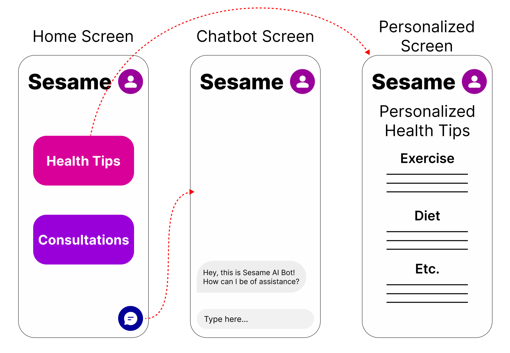

Allen's Sketch
Kaley's Sketch

Valentina's Sketch
Sofia's Sketch
By Allen Dufort, Sofia Guarisma, Kaley Newlin, and Valentina Lin
Project for Course CSCI 1300: Interaction Design
Timeline: 3 Weeks
For this project, 4 of us, Allen Dufort, Sofia Guarisma, Kaley Newlin, and Valentina Lin, worked in a team to bring a company's idea to life. We had the opportunity to work with the healthcare company Sesame for this project. Sesame works to get healthcare to users faster and cheaper while retaining high quality.
Our first step in working with Sesame was to understand what problems they wanted to tackle with our new design, as well as to brainstorm. The main points we had to tackle were:
We then each sketched out what we envisioned the product to be.
Allen's Sketch
Kaley's Sketch
Valentina's Sketch
Sofia's Sketch
After sketching our ideas, we incorporated the different aspects of our designs into a mockup using Balsamiq. We ultimately decided to develop four different web pages: a Welcome Page, a Personal Profile Page, a Symptoms Page, and a Health Tip page. We wanted the users to be able to easily navigate and use the website, while also being able to get specialized care. Below are the four pages we designed with annotations of the design choices:

We then met with Vanessa Cho, the VP of Google Design Platforms. She gave us several suggestions on what to focus on and possible improvements to our design. We also got plenty of feedback from Ravi Mehta, Sesame's CPO, as well as their Lead Product Designer, Chris Chon.
Some of the main feedback was:
We then made edits to our prototype, using the above feedback as a guide. Here are diagrams of the changes we made:

We proceeded to make a High Fidelity Mockup via Figma. Afterwards we met with Ravi and Chris again to do a final critique of our design. They were very impressed with the changes we made and thought that the design was much more user-friendly and accessible. Her is a video walkthrough of the high-fidelity mockup:
In the future, some changes we would like to make include:
Overall, we learned a lot about the design process and how to work with a team. We also learned how to take feedback and iterate on our designs. We are very proud of the final product and hope that it can help patients get the care they need!
We would like to thank Ravi Mehta, Chris Chon, Vanessa Cho, and Caroline Walters for their time and feedback. We would also like to thank the CSCI 1300 staff for their hard work and dedication.